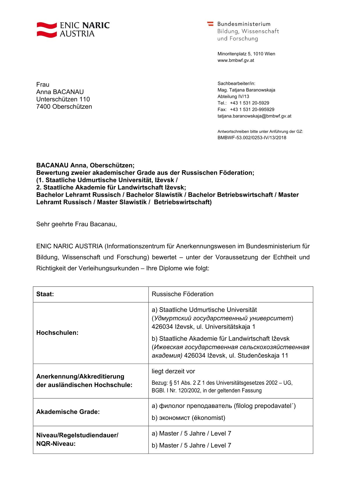
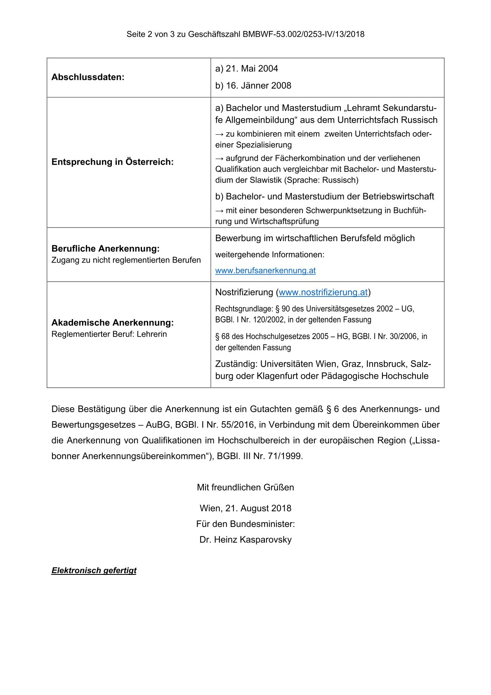
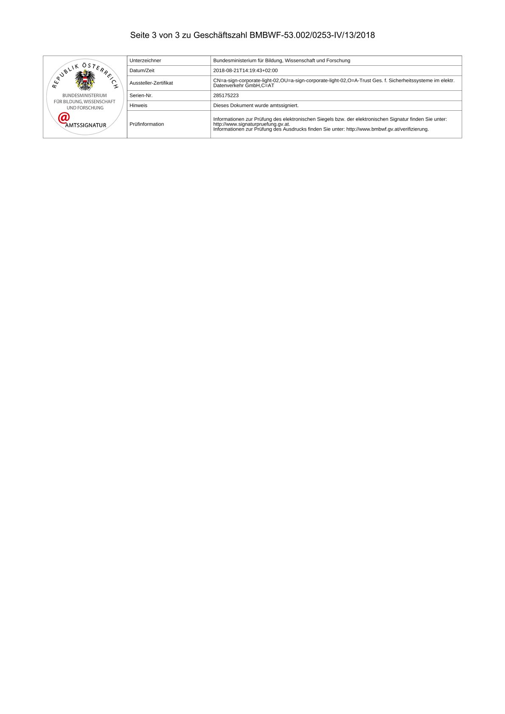

Die Anerkennung meiner akademischen Abschlüsse erfolgte durch ENIC NARIC Austria. Diese Stelle ist zuständig für die Bewertung und Anerkennung ausländischer Bildungsnachweise in Österreich.
Weitere Informationen finden Sie auf der offiziellen Website: ENIC NARIC Austria


